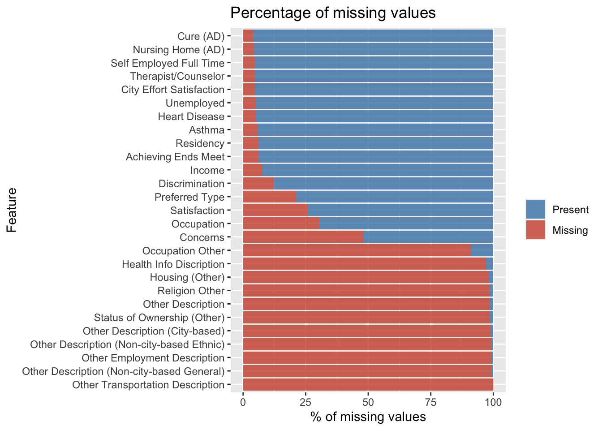
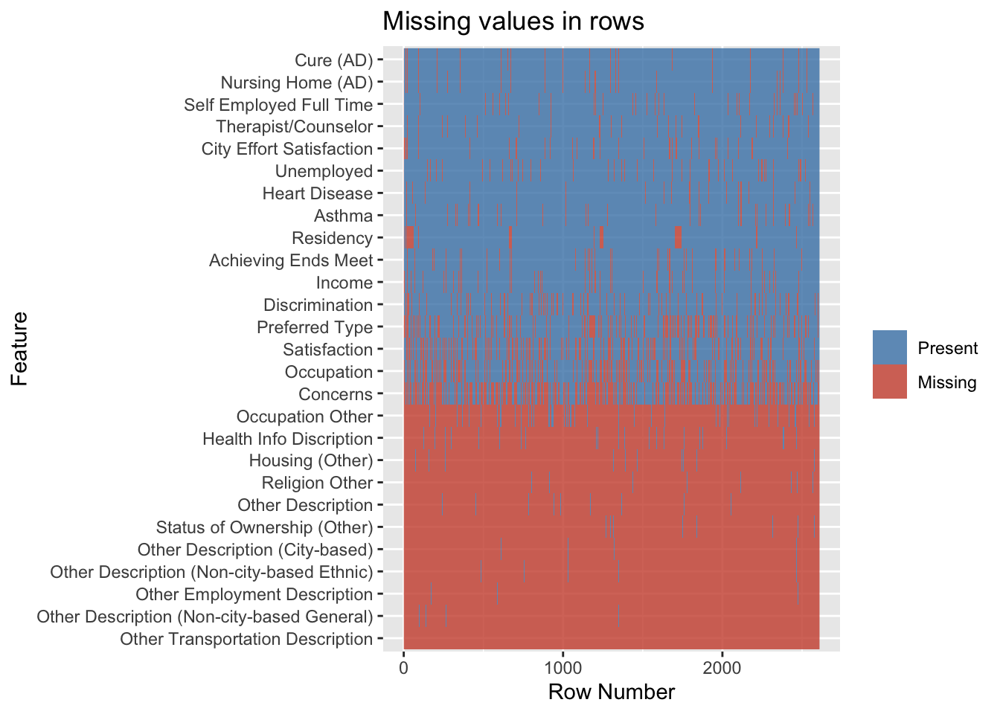
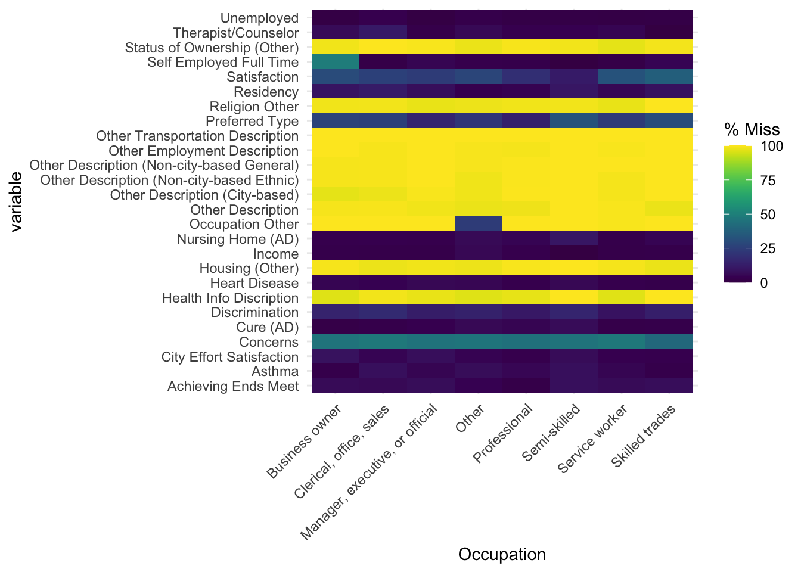
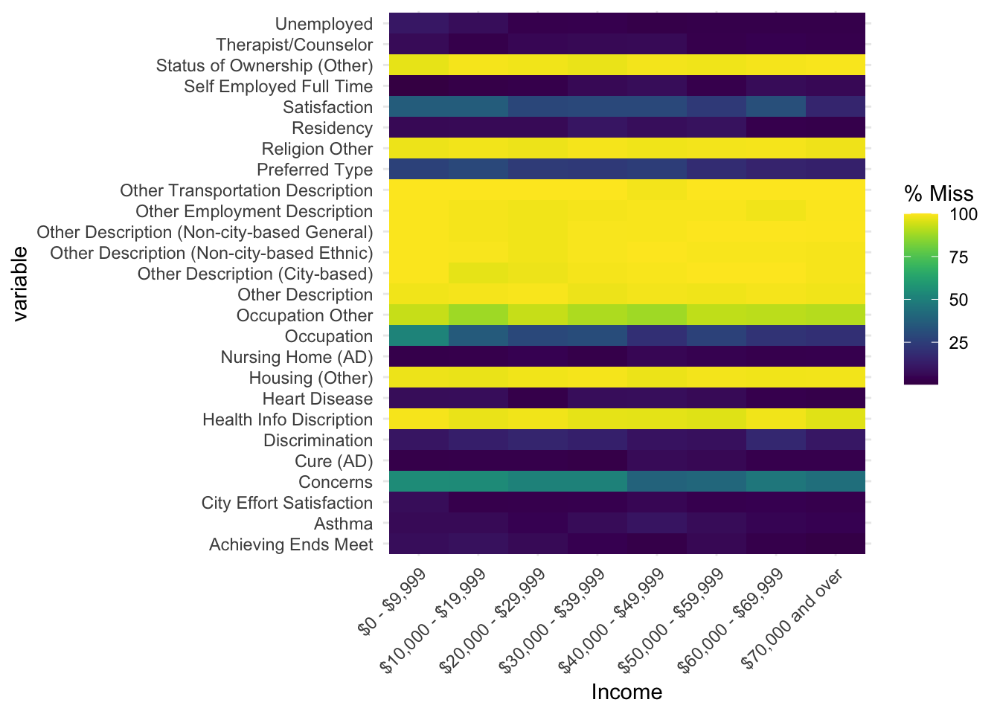

Chapter 3 Data
3.1 Sources
The dataset as mentioned earlier is made up of 2610 rows and 231 feature columns comprising information gathered from each respondent to the AAQoL survey about their quality of life in Austin. This survey was approved by The University of Texas at Austin Institutional Review Board (IRB). The questionnaire consisted of majority of questions dealing with the quality of life at Austin, Texas. The draft questionnaire was reviewed and approved by the AAQoL Commission members and staff from 15 city departments On analysis of the data, it was found that they were primarily categorical, had ordinal and nominal characteristics, nearly no continuous data, and a few discrete value columns. Since there are many columns in this data with missing values, it frequently becomes necessary to delete and pivot these columns in order to plot the data properly. As the data is categorical, plotting becomes an issue, representing most of the data in the same format does not give us any special insight. Hence proper data formatting and transformation is required before representation. Trying out various displays wouldn’t have been a problem if the data also included a large number of numerical values.
3.2 Cleaning / Transformation
Some of the feature columns in the dataset included a mix of numerical and categorical values rather than consistent values. Plotting the graphs would not be optimal if this were the case. As a result, those columns with precisely two distinct values were changed from 0, “text” to 0, 1. For instance, the values 0 and Living with spouse in the feature column Spouse were transformed to 0 and 1, where 1 denotes living with spouse. Some attributes were also translated from categorical to numerical values for graphing purposes. Age is a key aspect in any study to get insights, so to make the analysis process simpler, the age ranges “18-25” “26-50”, “51-75” and “>75” were added to the column Age_Group.
3.3 Missing Value Analysis
Since it is a survey, some respondents choose not to respond to questions they were uncomfortable answering, which causes a number of missing values in the data (NA). Nearly every row contained some missing values, and if they were excluded from the analysis, there would be no data.

The percentage of missing values in the data, those columns having more than 100 missing rows, or 4% of the data is represented graphically. The second graph indicated is plotted to look for trends in missing results, but there are none, demonstrating that the survey is not skewed. Finally, because this is a survey, there is a chance that data will be absent because respondents who fall under a certain status might prefer not to respond. That conclusion, however, was incorrect because no trend was visible when a graph was created to show the percentage of missing values based on income.

The issue of missing value has to be addressed for which analysis was first done on the feature columns that are to be represented as a graph, and the NA values were removed from these columns. In addition to this method, columns that contained 40% of NA values were removed before analysis and visualization. The survey ID is dropped as it isn’t crucial to the analysis.


The fact that a person earning 70,000 dollars or more and a person earning 0-9,999 dollars choose not to answer certain questions demonstrates that there is no differential based on income range. When the graph is plotted versus occupation, a similar pattern is shown. This further supports the claim that the survey is consistent and without bias.